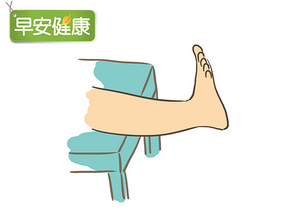
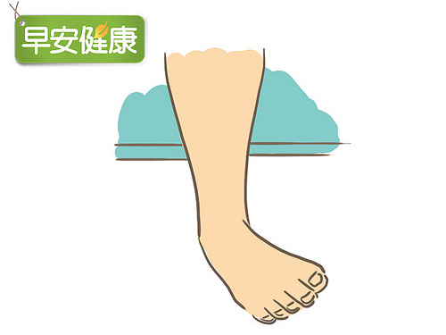
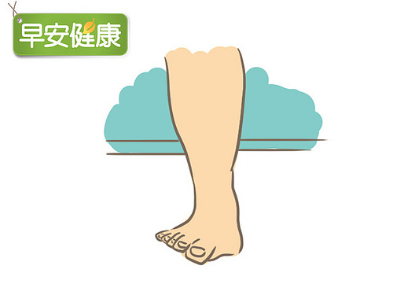
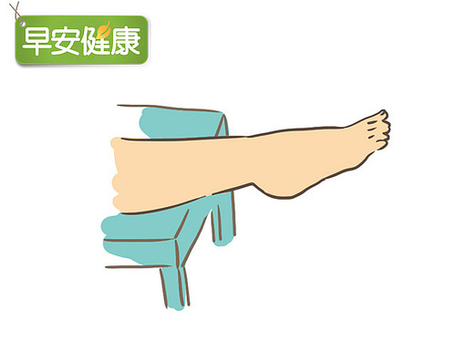
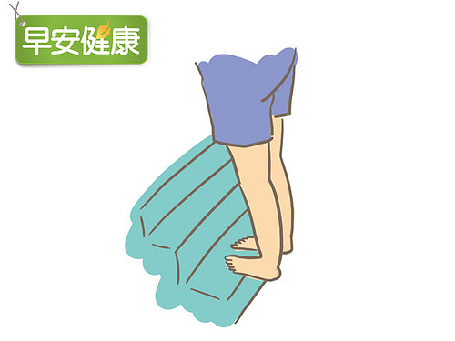
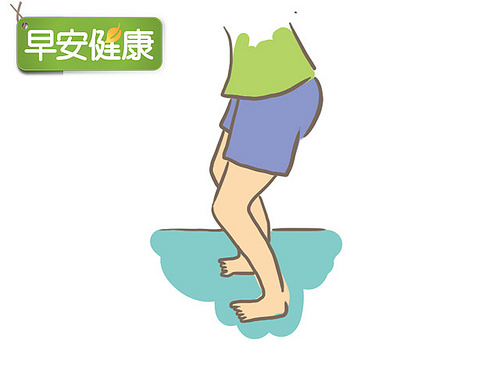

腳踝扭傷復健6招
1. 坐在椅子上，盡量將腳慢慢抬高，感覺小腿正慢慢的被伸展。保持這個動作數到10，然後重複10下。
2. 同樣也是坐在椅子上，將腳踝朝內往下壓。維持這個扭轉的姿勢數到10。重複10下。
3. 接著回到開始的姿勢，將腳踝朝外轉、往上拉伸，維持外翻的姿勢，數到10。重複10下。
4. 再回到開始位置，將腳指朝下壓，同樣也是數到10，重複10下。
5. 建議最好在腳踝已經完全感受不到疼痛之後，才進行這個動作。站在樓梯的邊緣，腳跟懸空往下壓，維持這個伸展的姿勢數到10，重複10下。
6. 這個動作也需要等腳踝疼痛完全消退之後，再做伸展。站在距離牆壁約30公分處，腳指頭指向牆壁。微微蹲下，維持這個姿勢數到10，重複10次。
